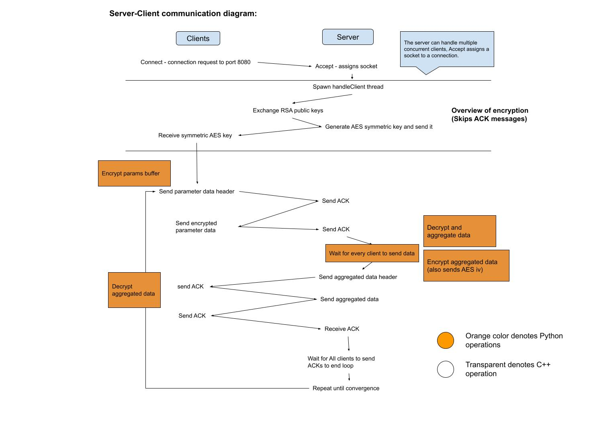

Project Overview
A federated learning framework that utilizes both C++ and Python to enhance machine learning model training efficiency.
Goal
Train Machine Learning models on-device and securely share their parameters with similar models from other devices to attain better performance, without needing to share sensitive user data.
Project Resources
Installation Instructions
Tested on Python 3.11.7, on Ubuntu 22.04 x64 through WSL and on macOS arm64 on this IP and port number combination.
pip3 install -r requirements.txt
python3 setup.py build_ext --inplace
python3 server.py --p 8080 --c 3 --i 0
python3 client.py --ip 127.0.0.1 --p 8080
Integration of Python and C++ using Cython
Python socket programming is known for unreliability, less control by the programmer and worse performance. C++ is better suited in order to better control the connection and data transfer process, while a language like Python is better suited for training Machine Learning models. We use the Cython library that enables Python to interface with C++ with intermediate methods using wrappers.
Operation
A diagram that shows the process.
Security Measures
All the data shared between the server and the clients is end-to-end encrypted. This is important in order to protect the data from malicious clients or outside attacks. Both symmetric (AES) and asymmetric (RSA) encryption is used accordingly.
Future Work
- Add more robust feature selection capabilities to our implementation
- Test different ML models
- Check different aggregation algorithms
- Test more and different performance metrics and thresholds
- Dockerize the implementation
Sources
- GeeksForGeeks TCP server-client implementation
- GeeksForGeeks c++ socket programming
- GeeksForGeeks c++ barrier
- GeeksForGeeks socket programming handling multiple clients
- GeeksForGeeks condition variables
- Jacob Sorber Multithreaded server in C++
- Scikit learn GaussianNB
- Cython documentation - user guide
- Python Cryptography RSA (Assymetric Encryption)
- Python Cryptography AES (Symmetric Encryption)
This project is part of my diploma thesis, supervised by Professor Ioannidis.